Vancouver
Vancouver, kosmopolitní metropole zasazená mezi majestátní pobřeží Tichého oceánu a zasněžené vrcholy pohoří Coast Mountains, představuje jedno z nejživějších měst v Severní Americe. Tato kanadská perla se vyznačuje bohatou kulturní scénou, rozmanitou gastronomií, fascinující historií a nádhernou přírodou, což z ní činí ideální destinaci pro všechny typy návštěvníků.
Historická část města, Gastown, s ikonickým parním hodinovým strojem, připomíná počátky Vancouveru jako malého osídlení a dnes nabízí bohatou nabídku uměleckých galerií, butiků a stylových restaurací. Pro milovníky architektury nabízí město i moderní skvosty, jako je zahrada Dr. Sun Yat-sen Classical Chinese Garden nebo spektakulární Vancouver Public Library.
Jeden z nejvýraznějších symbolů Vancouveru, Stanley Park, se rozkládá na poloostrově v centru města. Park nabízí spletité pěší a cyklistické stezky, zelené louky, pláže a umělý totemový park, poskytující klidné útočiště uprostřed rušného městského života. Cyklisté si mohou vychutnat panoramatické výhledy na město na stezkách, které obklopují pobřeží, zatímco výtah Grouse Mountain Grind Gondola vás zavede na vrchol Grouse Mountain, kde čekají zimní sporty a nádherné výhledy.
Vancouver je také známý svou gastronomií, která odráží jeho etnickou rozmanitost. Čtvrť Chinatown nabízí autentickou asijskou kuchyni, stejně jako pestrá nabídka delikates z různých kultur v městské čtvrti Granville Island. Město je také rájem pro milovníky mořských plodů, s množstvím restaurací podávajících čerstvé ryby a mořské plody.
Vancouver hostí řadu kulturních akcí a festivalů, včetně Vancouver International Film Festival, Vancouver Symphony Orchestra a různých uměleckých a hudebních představení. Zábavní čtvrti, jako je Yaletown, nabízejí noční život a kluby, zatímco centrum města je plné butiků, kaváren a moderních obchodů.
Pro milovníky sportu nabízí Vancouver výborné možnosti pro outdoorové aktivity. Během zimních měsíců se můžete vydat na lyže nebo snowboard na svahy nedalekých hor Whistler Blackcomb, které hostily Zimní olympijské hry v roce 2010. V letních měsících můžete prozkoumat okolní přírodu v North Shore Mountains nebo se vydat na vodní dobrodružství kolem zálivu False Creek.
Vancouver je prostě místem, kde se městský život mísí s přírodou, kde kultury spolu tancují a kde každý návštěvník najde něco pro své srdce a duši. Je to město, které nejenže pohlcuje svou krásou a aktivitami, ale také nabízí prostor pro odpočinek a prožití jedinečného spojení s přírodou a kulturou zároveň.

Kelowna
Kelowna, nádherně položená u břehů jezera Okanagan v britskokolumbijských vinicích, představuje skvostnou destinaci spojující přírodu, vinařství a městský život. Toto město, obklopené kopci a jezerem, se pyšní slunným klimatem, což mu dodává jedinečný a přívětivý ráz.
Historické centrum Kelowna odráží atmosféru starého města a nabízí malebné uličky s obchůdky, kavárnami a galeriemi. Večery zde ožívají díky různým restauracím, kde si můžete vychutnat nejen chutné pokrmy, ale i místní vína. Vzhledem k tomu, že Kelowna leží v srdci kanadských vinic, existuje mnoho vinic a vinařství, které nabízí degustace, prohlídky a výhledy na vinohrady.
Jezero Okanagan je centrem letních radovánek, kde si návštěvníci mohou půjčit kajaky, paddleboardy nebo si užít slunce na pláži. Cyklisté mohou prozkoumat okolí na cyklostezkách vedoucích vinicemi a olivovými háji, nabízejícími panoramatické výhledy na jezero a hory.
Kelowna se také vyznačuje spoustou kulturních akcí, včetně místních festivalů, koncertů a uměleckých výstav. Kelowna Art Gallery je skvělým místem pro poznání místní umělecké scény, zatímco Rotary Centre for the Arts hostí různé vystoupení a kulturní akce.
Milovníci outdoorových aktivit najdou v blízkém okolí Kelowny množství přírodních rezervací a parků. Od svižných horských stezek v parku Knox Mountain až po klidné procházky kolem vinic, Kelowna nabízí rozmanité možnosti pro každého, kdo touží po spojení s přírodou.
Celkově vzato, Kelowna je nejenom místem pro relaxaci a vyžití, ale také pro objevování bohatství kanadské kultury a přírody. Toto město na jezeře je zárukou nezapomenutelného pobytu, kde městský život splývá s venkovními dobrodružstvími a kde každý návštěvník najde něco, co mu rozšíří srdce a duši.

Calgary
Calgary, moderní a dynamické město v provincii Alberta, je příjemnou směsicí městského života, kultury a outdoorových aktivit, vše zasazeno do působivého horského prostředí. Toto město je nejlépe známé pro svůj energický charakter a pohostinnost, což z něj činí jednu z nejžádanějších destinací v Kanadě.
Centrum Calgary je plné moderní architektury, kancelářských budov a obchodních center, což odráží ekonomickou prosperitu města. Iconic Calgary Tower dominuje panoramatu města a nabízí dechberoucí výhledy na město a okolní hory. Čtvrť Stephen Avenue Walk, historická třída plná obchodů, kaváren a uměleckých galerií, je srdečním centrem města, kde se mísí kultura, obchod a gastronomie.
Calgary se také pyšní bohatou kulturní scénou. Glenbow Museum nabízí pohled do historie a umění regionu, zatímco Arts Commons je centrem pro výstavy, koncerty a divadelní představení. Pro milovníky vědy a technologie je TELUS Spark Science Centre fascinujícím místem pro objevování interaktivních expozic a experimentů.
Během léta hostí Calgary jednu z největších kulturních akcí v Kanadě, Calgary Stampede. Tato "Největší venkovská show na světě" přivádí do města rodea, koncerty, tradiční jídlo a spoustu zábavy pro návštěvníky všech věkových kategorií.
Calgary je také branou k přírodním krásám kanadských Skalnatých hor. Kousek od města se nachází kanadský národní park Banff, oblíbený cíl pro pěší turistiku, lyžování a pozorování divoké zvěře. Ať už si vyberete horskou túru nebo relaxaci u termálních pramenů, příroda v okolí Calgary nabízí nekonečné možnosti pro dobrodružství.
Celkově vzato, Calgary je fascinujícím spojením moderního městského života s dobrodružstvím v přírodě. Jeho pestrost, odvážnost a přívětivost z něj činí nezapomenutelné místo pro každého, kdo touží po spojení s městským životem a krásami kanadské přírody.

Edmonton
Edmonton, hlavní město provincie Alberta, vyniká jako rozkvétající kulturní a ekonomické centrum uprostřed kanadské přírody. Někdy označované jako "Festival City", Edmonton nabízí nejen bohatou historii a moderní infrastrukturu, ale také rozsáhlou paletu kulturních akcí a outdoorových aktivit.
Centrum města, známé jako Ice District, představuje místní ikony, včetně Rogers Place, domovské arény Edmonton Oilers, a střediska Edmonton Tower. Pro milovníky umění a historie je zde Art Gallery of Alberta, která nabízí pohled na vývoj umění v regionu. Fort Edmonton Park, největší historický park v Kanadě, přenáší návštěvníky zpět v čase do doby, kdy se město teprve začínalo formovat.
Jedním z výrazných symbolů města je North Saskatchewan River Valley, který poskytuje obrovský systém parků a zelených ploch, které se vinou podél řeky. Tato oblast je ideální pro pěší túry, cyklistiku, pikniky a sportovní aktivity, což umožňuje obyvatelům a návštěvníkům ponořit se do přírodního kouzla uprostřed města.
Jednou z největších atrakcí v Edmontonu je West Edmonton Mall, jedno z největších nákupních center na světě. Kromě nákupů nabízí nespočet zábavních možností, včetně vodního parku, obřího skluzavkového komplexu a dokonce umělého ledového hokejového stadionu.
Edmonton se také může pyšnit kulturním kalendářem plným festivalů. Mezi nejznámější patří Edmonton International Fringe Theatre Festival, Edmonton Folk Music Festival a Heritage Festival, který slaví rozmanitost etnických kultur v oblasti.
Pro milovníky vědy a technologie nabízí Telus World of Science fascinující interaktivní expozice a planetárium, zatímco Muttart Conservatory přináší tropickou atmosféru v podobě čtyř skleníků se vzácnými rostlinami z celého světa.
Edmonton je tak městem, které spojuje historii, kulturu a přírodu s moderním a dynamickým životem. Jeho pestrost a pohostinnost tvoří neodolatelnou kombinaci pro návštěvníky i obyvatele, kteří hledají vyvážený životní styl a bohaté zážitky.

Winnipeg
Winnipeg, hlavní město provincie Manitoba, leží na křižovatce řeky Assiniboine a řeky Red, v srdci kanadských prérií. Toto město, které se často nazývá "Bramboraře Kanady", kombinuje bohatou historii, kulturní rozmanitost a moderní přístup, což jej činí unikátním místem na kanadské mapě.
Historická čtvrť The Forks, která se nachází na soutoku dvou řek, představuje centrum kulturního dění. Zde najdete restaurace, obchody s místními výrobky, umělecké galerie a mnoho kulturních akcí. Forks National Historic Site nabízí pohled na historické památky a umožňuje návštěvníkům ponořit se do bohaté historie tohoto místa.
Winnipeg je rovněž domovem několika významných muzeí, jako je Manitoba Museum, kde se návštěvníci mohou seznámit s přírodou, historií a kulturou provincie. Další zajímavostí je Canadian Museum for Human Rights, které je prvním muzeem svého druhu na světě, věnovaným lidským právům a jejich vývoji.
Cultural District nabízí umělecký zážitek prostřednictvím různých divadel, koncertních sálů a galerií. V Centennial Concert Hall můžete zažít výjimečné hudební a divadelní představení, zatímco Winnipeg Art Gallery je domovem pro bohatou sbírku uměleckých děl z regionu i z celého světa.
Winnipeg je také znám svými festivaly. Folklorama, světově největší multikulturní festival, představuje více než 40 různých kultur v rámci jednoho města. Festival Jazz Winnipeg přináší do města světově uznávané jazzové umělce.
Přírodní krásy Manitoba jsou snadno dostupné z Winnipegu. Assiniboine Park a Zoo nabízí rozsáhlé zelené plochy, botanické zahrady a možnost pozorovat zvířata. Kromě toho lze snadno dosáhnout přírodních rezervací a jezer, která jsou ideální pro outdoorové aktivity.
Winnipeg spojuje bohatou kulturu s přátelským a přívětivým prostředím. Jeho pestrost a kulturní scéna tvoří neodolatelný mix pro ty, kteří chtějí objevovat historii, umění a přírodu na pomezí prérií a lesů.
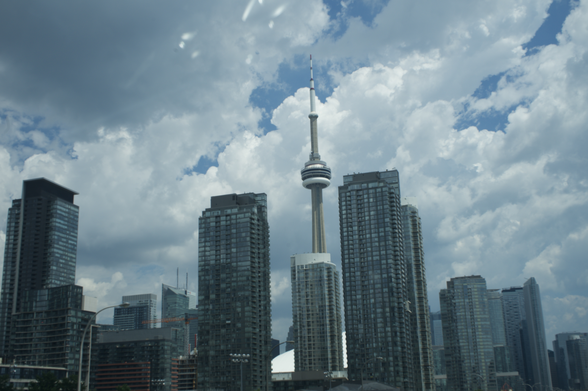
Toronto
Toronto, největší město Kanady a hlavní metropole provincie Ontario, je kosmopolitní destinací plnou kulturního bohatství, moderní architektury a rozmanitých komunit. Ležící na břehu jezera Ontario, Toronto se vyznačuje energetickým městským životem, historickými památkami a výjimečnými přírodními scenériemi.
Ikony města zahrnují CN Tower, jeden z nejvyšších volně stojících věží na světě, který nabízí dechberoucí výhledy na panorama města a okolní jezero. Toronto je známé svou moderní architekturou, což lze vidět na obchodním centru Toronto-Dominion Centre, které se stalo symbolem skleněných věží.
Rozmanité čtvrti Toronto odrážejí různorodost kultur a tradic. Čínská čtvrť, Little Italy, Greek Town a mnohé další poskytují autentické kulturní zážitky a gastronomické dobrodružství. Ulice Queen Street West je známá pro svou bohémskou atmosféru, umělecké obchody a módní butiky.
Royal Ontario Museum (ROM) a Art Gallery of Ontario (AGO) jsou významná muzea, která nabízejí rozsáhlé sbírky umění, historie a kultury. Ripley's Aquarium of Canada přináší podmořský svět do centra města, zatímco Ontario Science Centre je vzrušujícím prostorem pro vědecké objevy.
Toronto hostí různé kulturní akce a festivaly, včetně Toronto International Film Festival (TIFF), jednoho z nejvýznamnějších filmových festivalů na světě. Caribana Festival slaví kulturní dědictví karibských komunit, zatímco Nuit Blanche přeměňuje ulice ve městě v noční galerii umění.
Kromě městského života má Toronto také krásné přírodní zóny. Toronto Islands, skupina malebných ostrovů přístupných trajektem, poskytují únik z městského ruchu s panoramatickými výhledy na skyline města. High Park, největší městský park, nabízí zelené prostory, květinové zahrady a jezera.
Toronto je nejen ekonomickým a kulturním centrem Kanady, ale také místem, kde se snoubí světová rozmanitost s moderním životním stylem. Jeho pestrost, živá atmosféra a kombinace městských a přírodních zážitků činí toto město jedním z nejzajímavějších a životaschopných na světě.
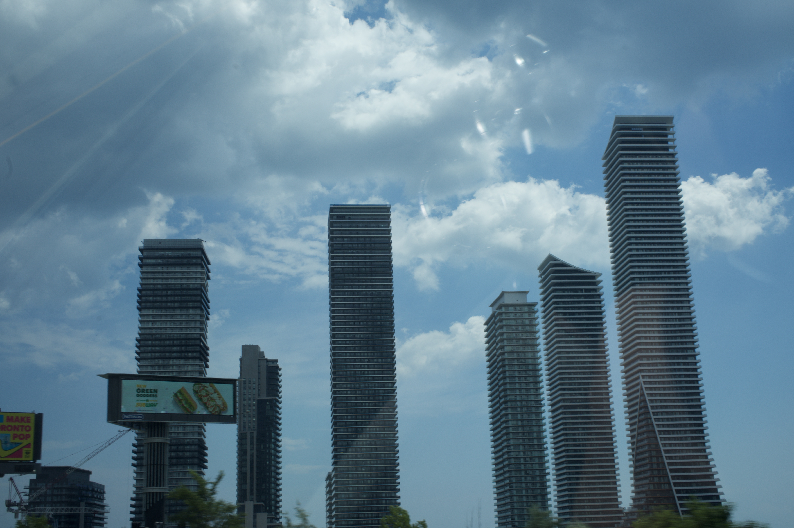
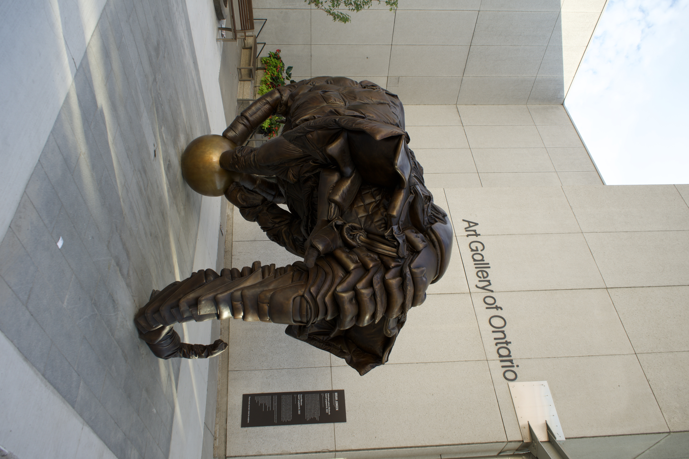
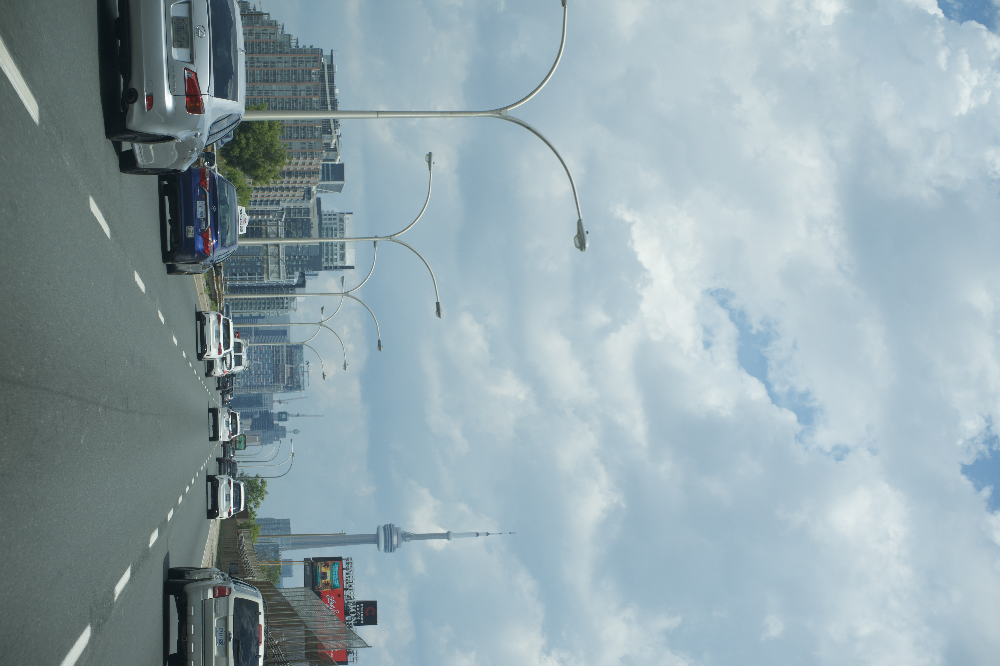
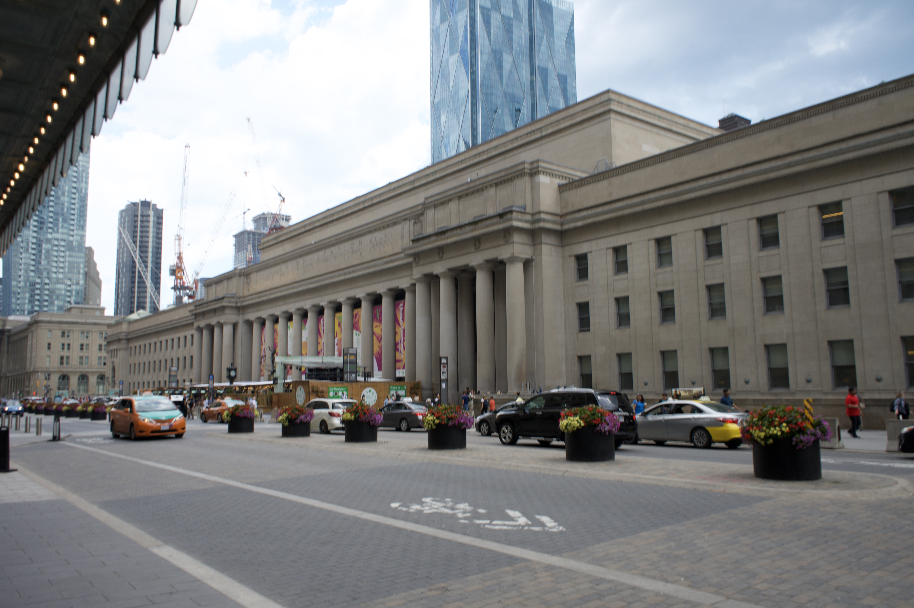

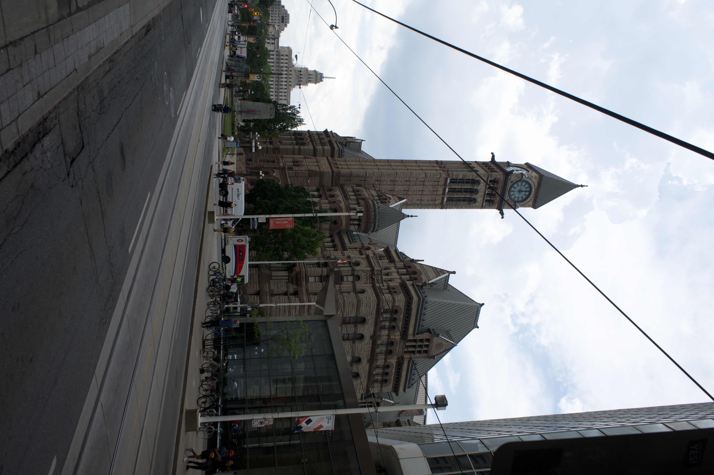

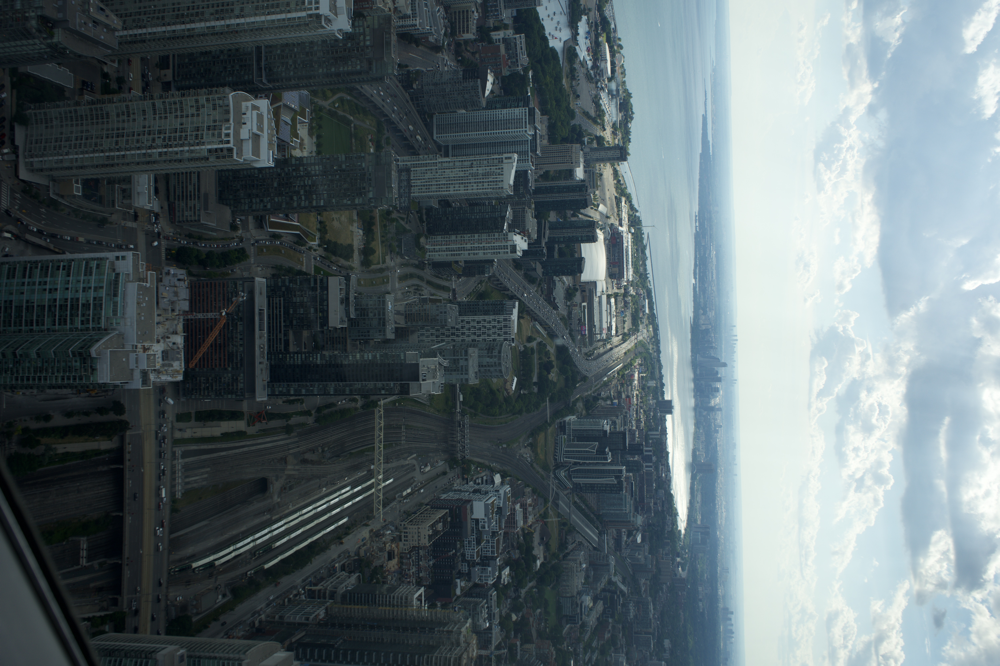
Ottawa
Ottawa, hlavní město Kanady, je působivá kombinace historické elegance, kulturního bohatství a politického významu. Ležící na břehu řeky Ottawa, toto město má výrazný charakter, kde se míchají starobylé památky a moderní architektura, vše podtrženo atmosférou politického srdce země.
Parlamentní budovy, zejména Centre Block s ikonickou Peace Tower, dominují panoramatu města a jsou symbolem kanadské demokracie. Návštěvníci mohou prozkoumat historické části Parlamentu, včetně Síně počestných národních hrdinů a Senátní komory.
Ottawa je rovněž domovem několika významných muzeí a galerií. National Gallery of Canada uchovává rozsáhlou sbírku kanadského a mezinárodního umění, zatímco Canadian Museum of History představuje bohatou historii země prostřednictvím interaktivních expozic.
ByWard Market, historický trh, je srdečním centrem města, kde návštěvníci mohou prozkoumat tradiční tržnici, butiky, kavárny a restaurace. Tato oblast nabízí bohatý mix kulinářských zážitků, včetně regionálních specialit a mezinárodních kuchyní.
Ottawa je známá svými festivaly a kulturními událostmi, včetně Canada Day Celebration, která se koná 1. července a přináší ohňostroje, koncerty a oslavy po celém městě. Winterlude je zimní festival, který přináší radovánky jako ledové sochy, kluziště na otvorenom a teplý nápoj v iglú.
Přestože je Ottawa především politickým centrem, má také krásné přírodní scenérie. Okolí města nabízí příležitosti k pěší turistice, cyklistice a vodním aktivitám. Gatineau Park, na druhém břehu řeky Ottawa, je oblíbeným místem pro outdoorové aktivity a nabízí nádherné výhledy na město.
Celkově vzato, Ottawa je místo, kde se historie a současnost setkávají ve vzájemné harmonii. Je to město, které odráží různorodost a jedinečnost Kanady, a nabízí návštěvníkům nejen politické zážitky, ale také kulturní bohatství a příjemnou atmosféru.

Quebec City
Québec City, jedno z nejstarších měst v Severní Americe, je malebná perla s bohatou historií, kulturním dědictvím a evropským šarmem. Ležící na břehu řeky svatého Vavřince, toto město v provincii Québec vyniká starobylými uličkami, historickými budovami a úchvatnými výhledy.
Historické centrum Québecu, označované jako Old Québec (Staré město), je jednou z nejlépe dochovaných pevností v Severní Americe a bylo zapsáno na seznam světového dědictví UNESCO. Návštěvníci mohou procházet kamennými uličkami, které lemují malebné obchody, kavárny a umělecké galerie. Iconic Château Frontenac, nejvýznamnější hotel v městě, dominuje skyline města a nabízí nádherné výhledy na řeku a okolní krajinu.
Staré Město je rozděleno na Horní město (Upper Town) a Dolní město (Lower Town), přičemž Horní město je sídlem významných historických památek, včetně katedrály Notre-Dame, která je jedním z nejstarších kostelů v Severní Americe. Dolní město se vyznačuje úzkými uličkami, starobylými domy a nábřežím, které nabízí malebné výhledy na vodu.
Citadela, historická vojenská pevnost, přináší návštěvníkům fascinující pohled na vojenskou historii města a nabízí panoramatické výhledy na okolí. V létě je Festival d'été de Québec jednou z nejvýznamnějších kulturních událostí, která přináší do města koncerty, divadla a umělecká vystoupení.
Pro milovníky umění a kultury je Musée de l'Amérique francophone domovem rozsáhlých sbírek, které dokumentují historii francouzské Ameriky. Place Royale, historické náměstí v Dolním městě, je považováno za kolébku francouzské civilizace v Severní Americe.
Quebec City je nejen městem historie, ale také gastronomickou destinací. Regionální kuchyně nabízí lahodné speciality, včetně poutine, tourtière a klasických francouzských dezertů.
Celkově vzato, Quebec City je jako cesta do evropské minulosti uprostřed moderní Kanady. Jeho úzké uličky, historické budovy a bohatá kultura tvoří jedinečné prostředí, které přitahuje návštěvníky z celého světa.

Montreal
Montreal, kulturní metropole provincie Québec, je město, které pulzuje energií, historií a rozmanitostí. Ležící na ostrově na řece svatého Vavřince, Montreal se vyznačuje bohatou architekturou, uměleckou scénou, gastronomií a jedinečným spojením francouzské a anglosaské kultury.
Historická čtvrť Vieux-Montréal (Staré Montreal) je klenotem města, plným kamenných uliček, historických budov a uměleckých galerií. Basilique Notre-Dame, majestátní katedrála s gotickou architekturou a bohatou výzdobou, je jedním z nejvýznamnějších sakrálních památek v Kanadě. Place Jacques-Cartier, centrální náměstí Vieux-Montréal, pulzuje životem s restauracemi, kavárnami a pouličními umělci.
Montreal je známý svou kosmopolitní atmosférou a multikulturním charakterem. Quartier des Spectacles je epicentrem kulturního dění, kde se nachází divadelní sály, koncertní haly a umělecká studia. Město hostí řadu festivalů, včetně renomovaného Montreal International Jazz Festival a Just for Laughs Festival, který oslavuje humor a komedii.
Montreal je rovněž domovem několika významných muzeí. Musée des beaux-arts de Montréal (Muzeum výtvarných umění) nabízí rozsáhlou sbírku evropského a kanadského umění, zatímco Musée d'art contemporain de Montréal (Muzeum současného umění) se zaměřuje na moderní a současné umění.
Montrealská gastronomie je ohromující kombinací francouzských, italských, židovských a mnoha dalších vlivů. Plateau-Mont-Royal je čtvrť plná trendy restaurací, kaváren a obchodů. Saint-Laurent Boulevard, známý jako "The Main," je dlouhá ulice s mnoha bary, klubovými scénami a obchody.
Montreal je také známý svými zimními radovánkami. Mont Royal, národní park přímo v centru města, nabízí skvělé možnosti pro lyžování, snowboarding a procházky na sněhu.
Celkově vzato, Montreal je městem, které spojuje moderní vývoj s bohatou historií a kulturním dědictvím. Jeho přívětivá atmosféra, kulturní pestré prostředí a gastronomické lahůdky činí z Montrealu jednu z nejživějších a nejinspirativnějších destinací v Severní Americe.


 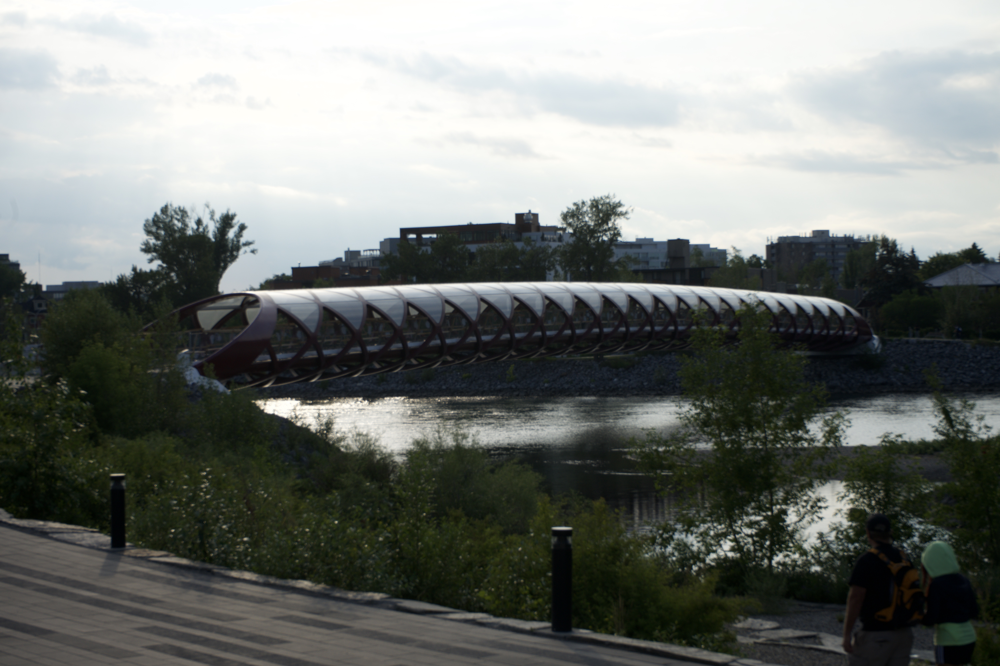
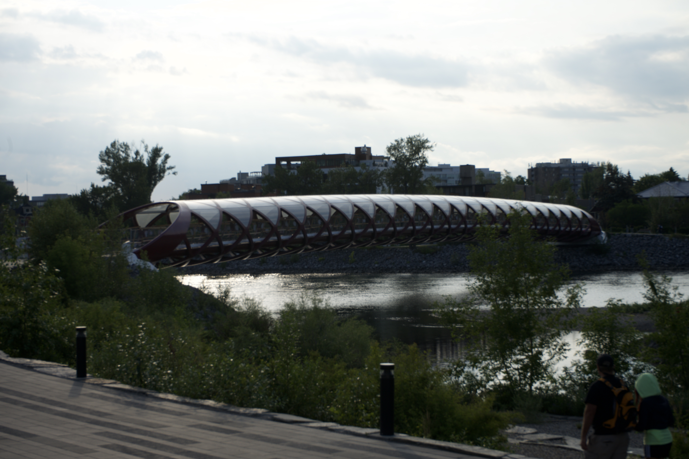


 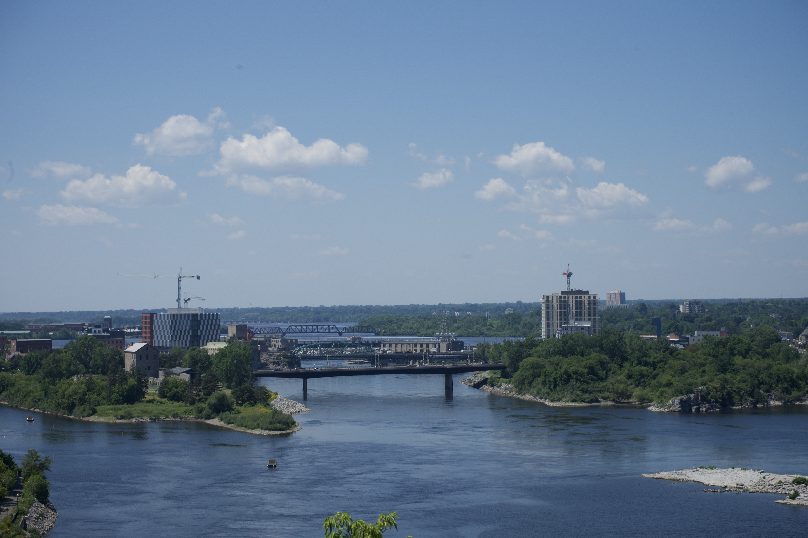
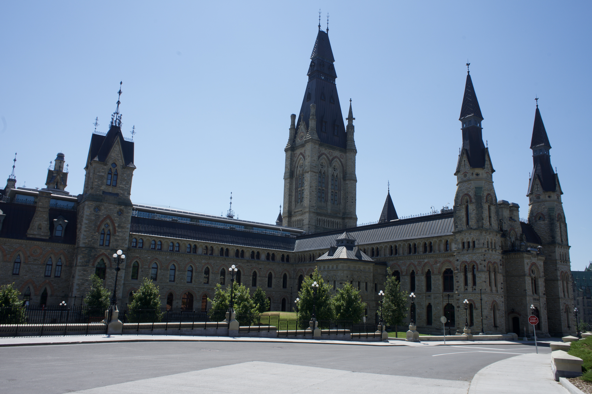
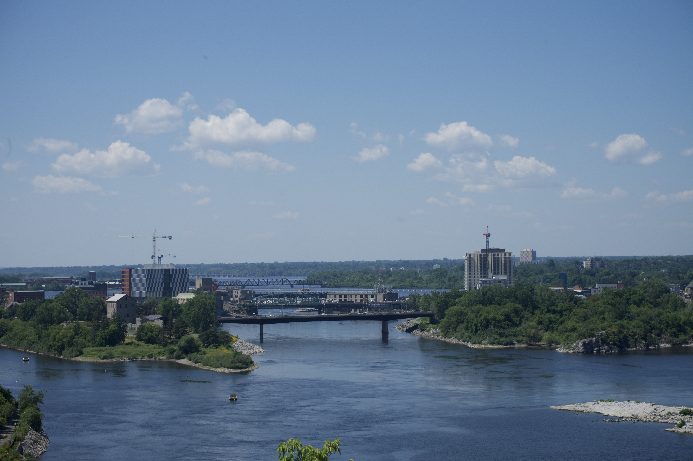
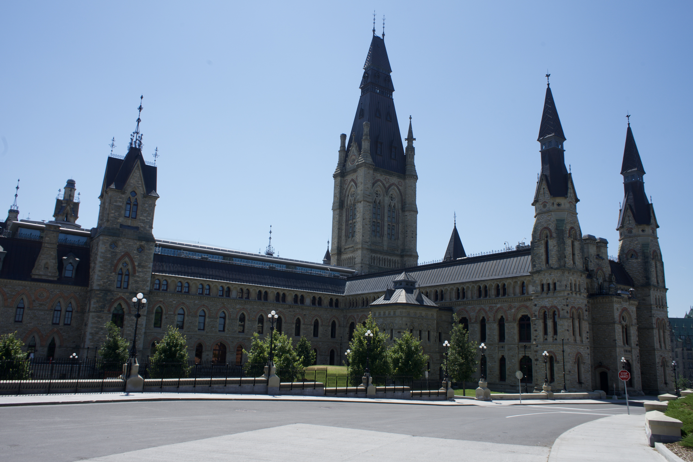

 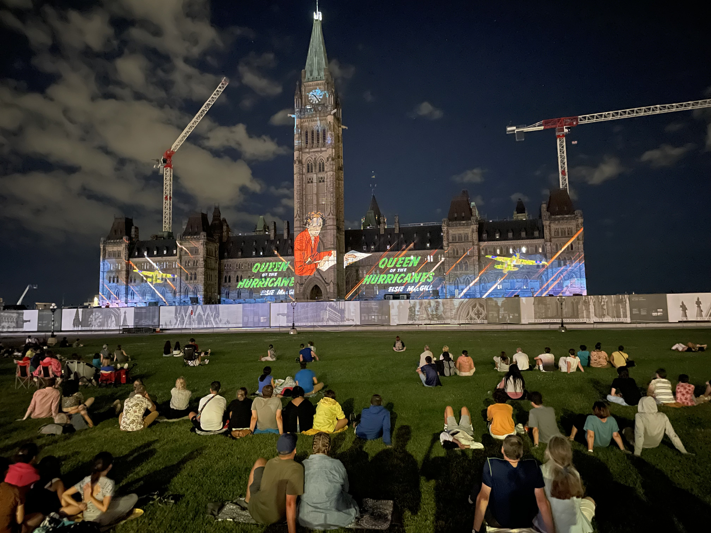
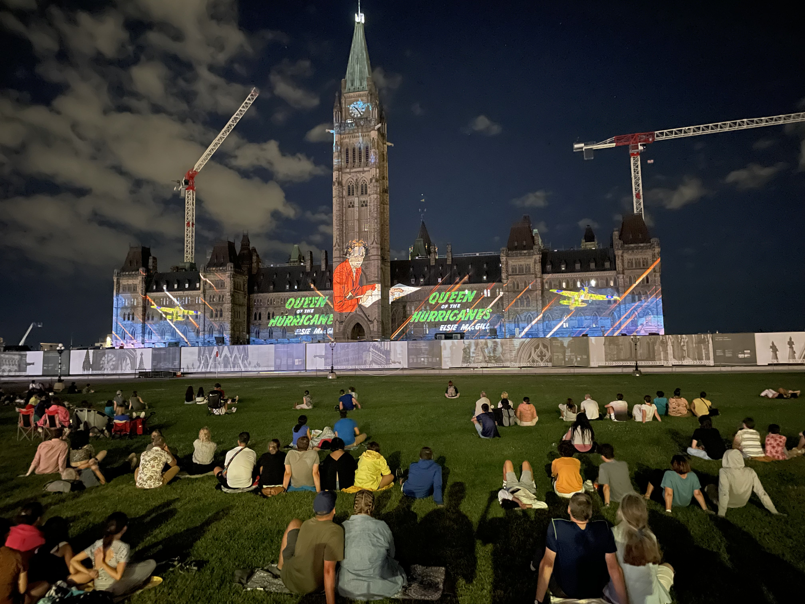

 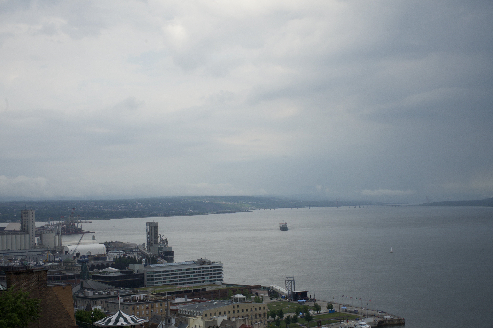
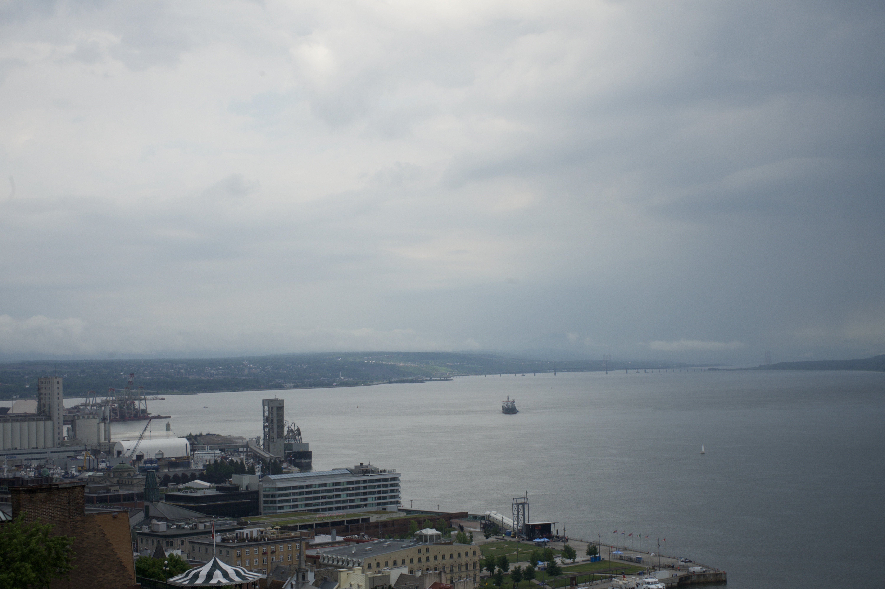


 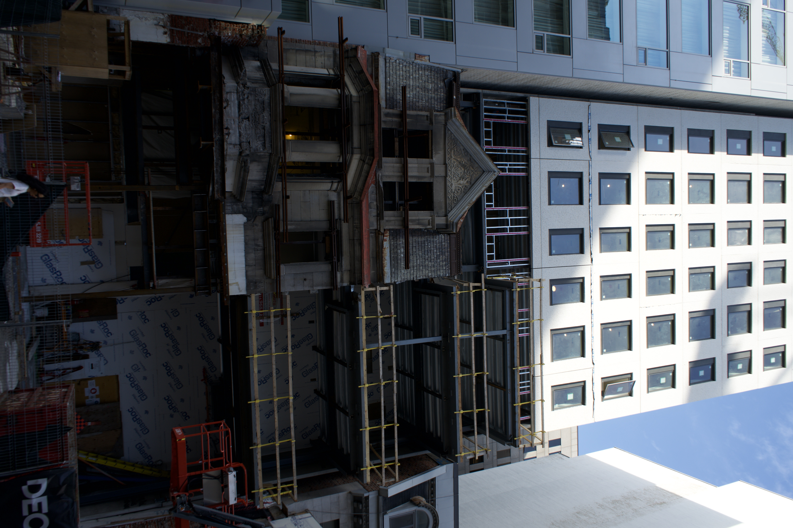
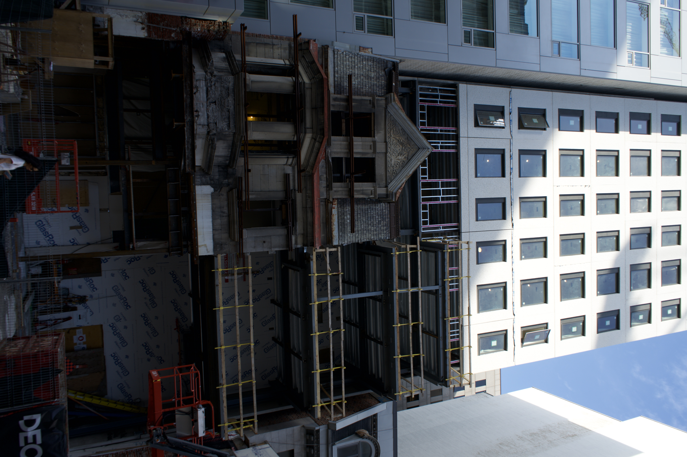